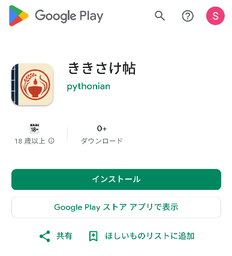
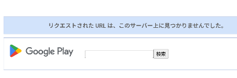

日本酒の記録アプリ「ききさけ帖」を、公開前に試してくれる方を募集しています。
記録のしやすさ、選択肢の分かりやすさ、使っていて迷う点をフィードバックお願いします。
参加までの基本の流れ
うまく参加できない場合は、アプリのインストール方法とopt-inの確認方法をご覧ください。
事前準備: Gmailアドレスを連絡する
テスター登録のため、Google Playで使うGmailアドレスを収集フォームから開発者に共有します。
- 1. アプリをインストール Google Playのアプリページからアプリをインストールします。
- 2. opt-inの確認 参加リンクを確認し、テスター参加に同意します。
- 3. アプリを使う 日本酒の情報を登録し、色・香り・味を選び、飲んだ時の印象を記録します。
- 4. フィードバック送信 分かりにくい点、動作の問題、欲しい項目をフォームから送信します。
Gmailアドレスは収集フォームから送信してください。
フィードバック観点
気づいたことは、Googleフォーム、LINE、メールなど、送りやすい方法で送ってください。細かく整理しなくて大丈夫です。「この画面で迷った」「ここで保存できなかった」「この言葉が分からなかった」など、気づいたことをそのまま送ってください。
まずはこれだけ
基本の流れと困ったところ
- アプリが起動できるか
- 日本酒を登録できるか/反映されるか
- レビューを登録できるか/反映されるか
- 操作中に迷うところがないか
- 落ちる、固まる、表示が崩れるなどの不具合がないか
余裕があれば 任意
- 色・香り・味の選び方が分かるか
- 専門用語が難しすぎないか
- ヘルプや説明が役に立つか
- 選択肢が多すぎないか、または足りないか
- 文字サイズ、余白、ボタン位置、一覧の見やすさに違和感がないか
- 入力が面倒すぎないか
- 2本目、3本目も登録したいと思えるか
- 家飲み、店飲み、イベント、旅行先などで使いやすいか
詳しく見られる方へ 任意
- 画像登録、編集、削除、再編集が期待通りに動くか
- バックアップ・復元機能は期待通りに動作するか
- 同じ日本酒に複数レビューを登録する流れが自然か
- 酒情報とレビュー情報が分かれている意味が伝わるか
- 温度、色、香り、味、酒類、分類などの用語に違和感がないか
- カメラ・画像選択などの権限要求が自然か
- 連続タップ、高速スワイプ、権限拒否、画像選択キャンセル、入力途中で戻る、端末回転、アプリ再起動時の挙動に問題がないか
- Androidアプリとして自然な見た目・操作感か
- Material Design 3 の観点で、色、余白、カード、FAB、ナビゲーション、ダイアログに違和感がないか
- 文字サイズ、コントラスト、タップ領域、片手操作、ダークモードに問題がないか
送るときに書いてもらえると助かること
- どの画面か
- 何をしようとしたか
- 実際に何が起きたか
- 本当はどうなると思ったか
- スクリーンショットがあれば添付してほしい
【流れ】 1. アプリのインストール方法
- Google Playのアプリページを開いてください。必要に応じて事前に登録したGmailアドレスのGoogleアカウントでログインください。
- ストアページが表示されてインストールできれば、クローズドテストに参加した状態になります。 流れ2 にてご確認ください。


【流れ】 2. opt-inの確認方法
- クローズドテスト参加リンクを開きます。必要に応じて事前に登録したGmailアドレスのGoogleアカウントでログインください。
- "You are a tester." と表示されていれば参加済みです。"Become a tester" が表示される場合は、ボタンを押してテスター参加に同意してください。


このアプリでできること
日本酒を記録
銘柄、酒類、酒造、画像などの基本情報を保存できます。
レビューを複数回保存
同じ日本酒でも、温度や場面ごとにレビューを残せます。
選択式で評価
色・香り・味を選ぶ形式にして、初心者でも記録しやすくします。
プライバシー
現バージョンでは、入力した日本酒情報、レビュー、画像は端末内に保存され、開発者のサーバーやクラウドには送信されません。